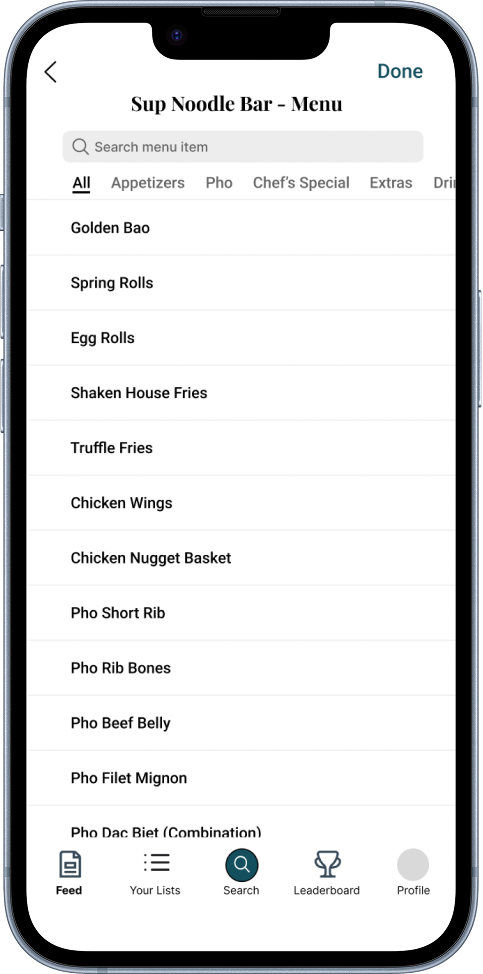
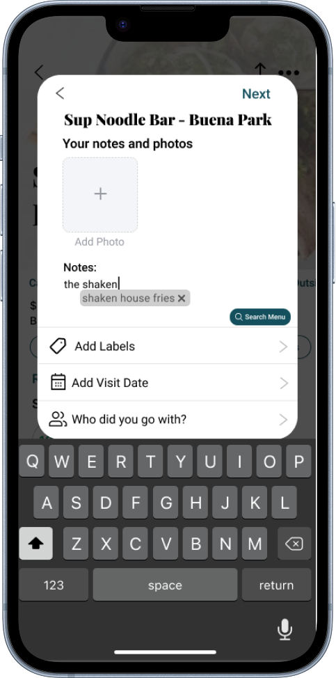
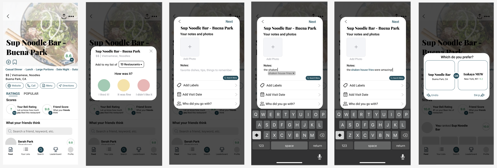

Overview
Beli
A feature redesign for a food rating app, focused on making it faster to log what you ate.
- Product
- Beli is a food rating and restaurant tracking app. I redesigned the rating page and introduced menu search with autofill, so logging a review takes less memory and fewer unnecessary choices.
- Challenge
- The rating page overwhelmed users with too many choices at once, and with no menu search they had to recall dish names from memory. A simple task became a frustrating, high-effort one.


01 Context
Rating a meal shouldn't depend on remembering it.
I use Beli to track every restaurant I visit, but rating meals was always a struggle since I could never remember what I ordered. That friction made me want to find out whether other users ran into the same problem.
02 Research
Users forget dish names, skip features they don't understand, and use notes to fill the gaps.
I surveyed five Beli users aged 18 to 30. Three patterns emerged that shaped every design decision that followed.
Recall
4 of 5
users forget the name of their menu item at least 50% of the time when rating a restaurant.
Most used
Photos
Add photos, add notes, and who did you go with? are the features people reach for most.
Least used
80%
rarely or never add favorite dishes, often because they don't have one single favorite.
"I never understood why Beli put the 'Add Photos' option at the bottom of the screen. It's the feature I use the most, and it's hard to find." Beli user
"Sometimes you just don't have one favorite dish, and other times you may have many, so I usually just include all of my options in the notes section." Beli user
03 Define
The real problem: a disconnect between how users think and how the app works.
Users didn't log reviews the way the app expected. They forgot dish names, skipped features like Favorite Dishes and Tags, and wrote everything in Notes to avoid extra steps. This wasn't a feature gap. It was a mismatch between the app's mental model and the user's actual post-meal behavior.
These findings shaped two objectives:
-
Enhancing menu searchHow can users find and log dishes without relying on recall?
-
Streamlining the rating experienceHow can the rating screen reduce cognitive overload so a review feels fast, not tedious?
04 Ideation
Weighing three approaches to menu discovery.
I narrowed the menu search problem to three approaches, drawing from everyday platforms that make recall easier without breaking the flow: an autofill suggestion bar, a searchable menu, and an @ symbol shortcut to trigger search.
Autofill suggestion bar
Strengths
- Finds items from a small keyword
- Adds items to notes seamlessly
- Familiar from iMessage
Weaknesses
- Items may share a first word
- No help if no keywords are remembered
Menu search
Strengths
- Browse the menu without knowing names
- Keyword search is also available
- Categories make items easy to find
Weaknesses
- More taps for each item
- The process repeats for every item
@ symbol shortcut
Strengths
- Signals intent to autofill
- Familiar from @-mentions
Weaknesses
- May confuse users typing @
- Hard to discover as a search trigger
I combined autofill and menu search. If users remember part of a dish, autofill finds it instantly. If they remember nothing, they can browse the full menu by category. Together they make finding dishes easy without introducing a new interaction pattern.
05 Design
Creating a streamlined experience.
- Autofill and menu search
- Autofill happens in line as users type their notes, so logging a dish never breaks their flow. If they'd rather browse, they can jump straight into menu search and find the exact dish without leaving the app.
- Restructured rating page
- The original page gave every field, photos, tags and notes, equal visual weight, so users had to hunt for what they wanted. I restructured it around usage, bringing "Add Photos" to the top and grouping related fields together.

- Progressive disclosure
- To avoid feature overload, I broke the review into sequential steps so each screen asks for one thing at a time: a quick overall reaction, then notes and photos with inline autofill, then a comparison against another restaurant that sets the final ranking.

06 Metrics
What I'd test to measure success.
If these features shipped, I'd want to know whether they reduced the friction users reported and whether the new features got used.
- Review speedAverage time to complete a review, from open to submit.
- Autofill adoptionHow often users accept autofill suggestions when they appear.
- Menu search usagePercentage of reviews that include a menu search interaction.
- Ease ratingSelf-reported difficulty in a survey after completing a review.
07 Reflection
My takeaways.
This project taught me how much friction can hide in a seemingly small interaction. It exposed a deeper mismatch between how the app was structured and how people actually behave after a meal.
It also showed me how simple features built into the existing flow, paired with small visual changes that emphasize hierarchy, can change the whole experience.
back to top ↑